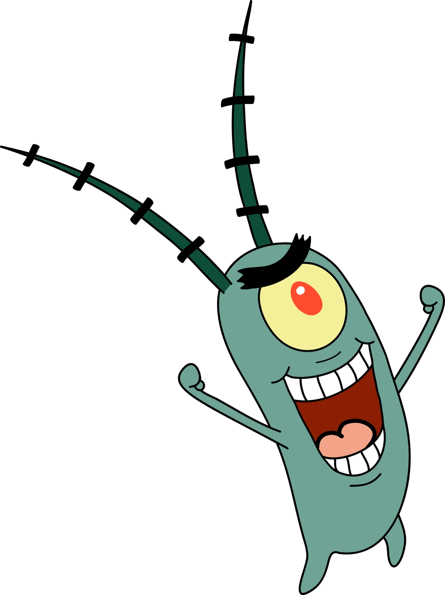
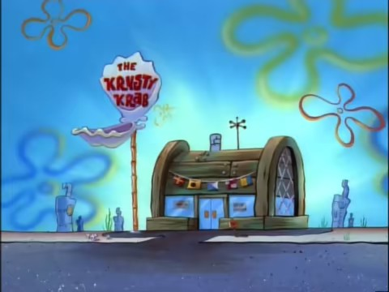
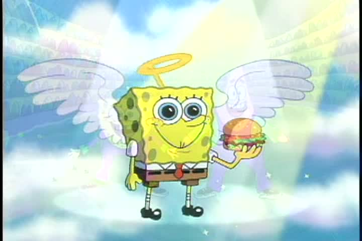

The
Krusty
Krab
Remembering Pickles Since 1999
Warning!
Be on the look out for Sheldon J. Plankton. He has been trying to steal the secret formula for years, with each scheme crazier than the last.
(click or press "e" to exit)

- Located at 831 Bottom Feeder Lane. Come give us your money!
- Hours:
- Monday through Saturday; 8:00 a.m. to 6:00 p.m.*
- Tuesday; 8:00 a.m. to 8:00 p.m.*
- Sunday; Closed.*
Home to the Krabby Patty, famous across the seven seas and certified to be good for your soul!**
*Hours subject to change depending on current episode.
**Over consumption of Krabby Patties has been known to go straight to the hips followed by exploding.